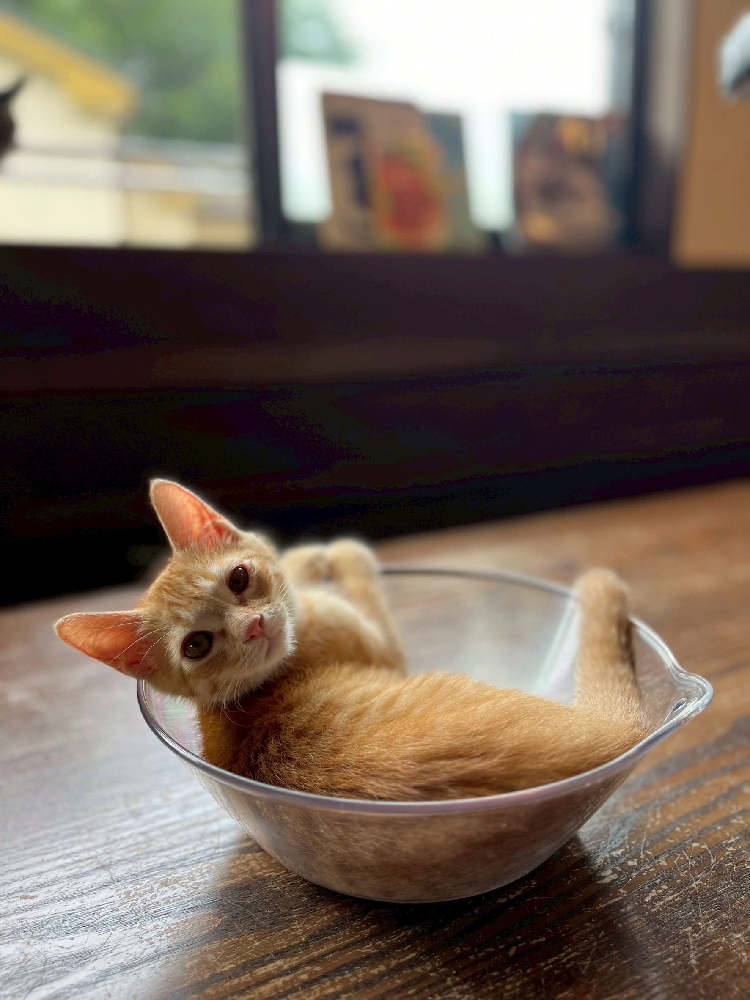
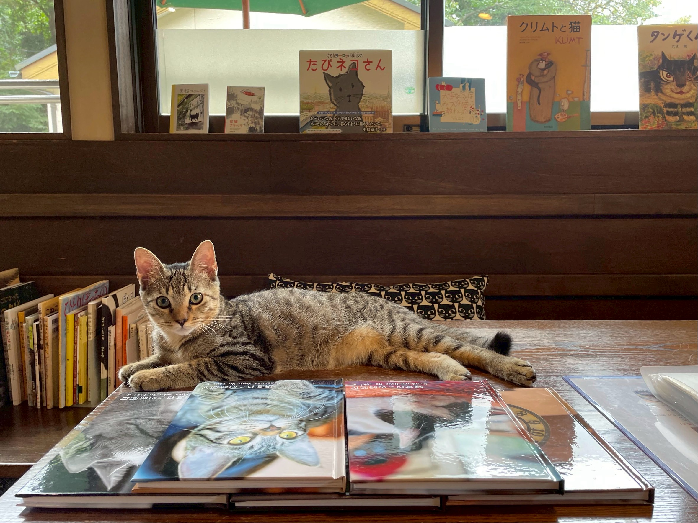
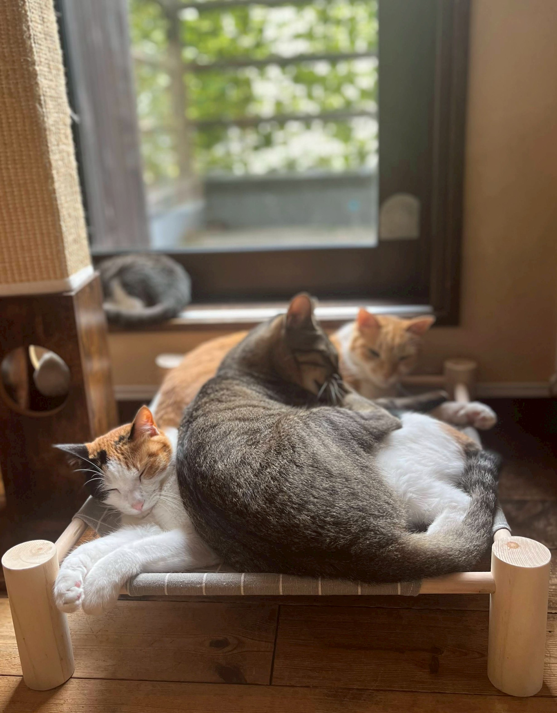

まる
窓辺が好きだった甘えんぼ。ゆっくり時間をかけてご縁がつながりました。
Graduates
ここで出会い、家族のもとへ歩き出した子たちの記録です。

窓辺が好きだった甘えんぼ。ゆっくり時間をかけてご縁がつながりました。

先住猫のいるお家へ。今では一緒に日なたぼっこを楽しんでいます。

少し怖がりでしたが、ご家族のあたたかい見守りで表情がやわらぎました。
卒業は終わりではなく、新しい暮らしの始まりです。在籍猫たちにも、それぞれに合う家族との出会いを探しています。